Understanding Naive Bayes
Supervised Naive Bayes Prediction
Marcus Birkenkrahe
Created: 2023-03-22 Wed 19:24
Naive Bayes
- Lecture notes in Markdown file (4_naive_bayes.md) - Source: Lantz (2019), chapter 4, pp. 89-123 - DataCamp assignment: "Supervised learning with R", ch. 2
What you will learn
- Classification using Naive Bayes
- Bayes' theorem and naive assumptions
- Text classification use case
- R packages for text mining & visualization
- Application: SMS junk message filter
Probabilistic methods
- Probabilistic methods describe uncertainty - They use data on past events to extrapolate future events - Such predictions are subject to many assumptions
Probability
- A probability P is a number between 0 and 1 (0% to 100%) - P captures the chance that an event will occur based on evidence - P = 0 indicates that the event will definitely not occur - P = 1 indicates that the event will occur with absolute certainty
Bayesian methods
- Training data are used to calculate outcome probability - Evidence is provided by labeled feature values - Classifier uses calculated probabilities to estimate class
Applications
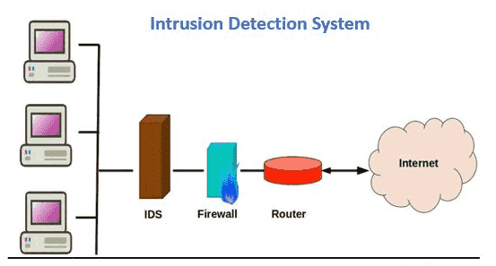
- Text classification, e.g. spam filter
- Anomaly detection in computer networks
- Diagnosing medical conditions
Basic idea
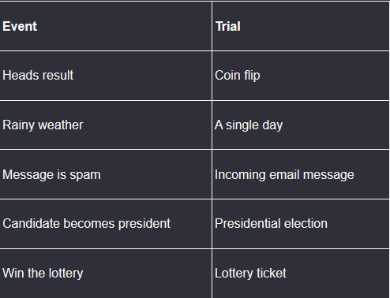
The estimated likelihood of an event or potential outcome is based on the evidence from multiple trials or opportunities for the event to occur.
Spam vs. Ham
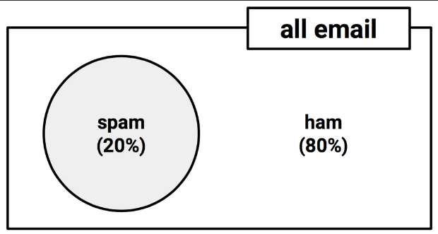
In email trials, spam and ham are mutually exclusive and exhaustive events.
Joint probability
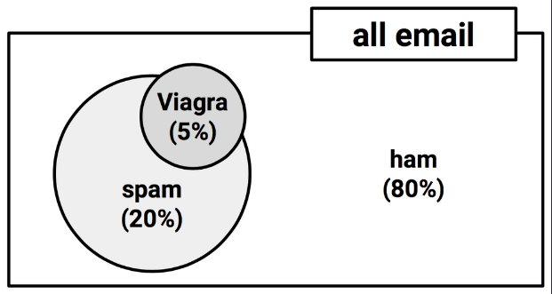
'Viagra' is a non-mutually exclusive event. Its overlap with 'spam' is larger than its overlap with 'ham'.
Venn diagrams
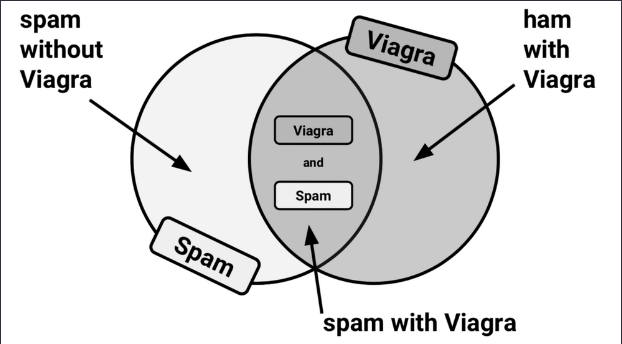
Calculating P(spam ∩ Viagra) depends on the joint probabilities of the two events, on their dependency.
Bayes' theorem
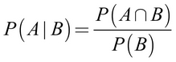
- For independent events, P(A ∩ B) = P(A) * P(B)
- P(Viagra AND spam) = (5/100) * (20/100) = 0.01
- P(A|B) is the probability of A given B occurred
- P(A|B) is the probability of A conditional on B
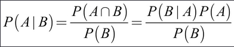
Bayesian spam filter
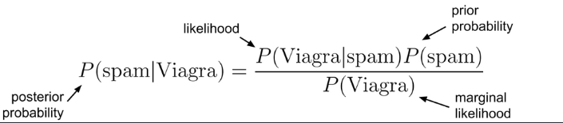
To calculate the components, construct a frequency table that records how often 'Viagra' appeared in 'spam' and 'ham' messages.
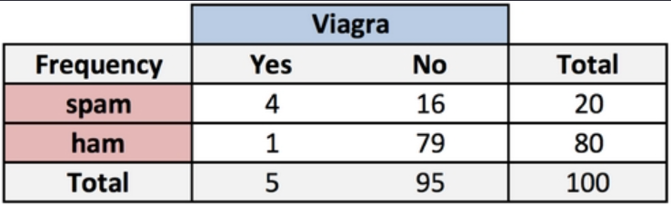
Likelihood table
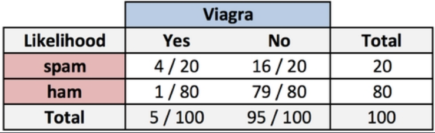
The rows of the likelihood table contain the conditional probabilities for "Viagra" (yes/no) given that an email was spam or ham:
P(Viagra = Yes | spam) = 4/20 = 0.20 P(spam & Viagra) = P(Viagra|spam) * P(spam) = (4/20)*(20/100) = 0.04 P(spam|Viagra) = (4/20) * (20/100) / (5/100) = 0.80
Naïvety of the algorithm

- All features are equally important and independent
- Is this justified in real datasets?
Examples: spam / sentiment analysis
Adding more features

Is the message spam given that it contains the terms "Viagra" and "unsubscribe", but not "Money" or "Groceries"?

Cp. "The Ultimate List of 394 Email Spam Trigger Words to Avoid in 2023"
Core assumptions
- Class-conditional independence
- Constant marginal likelihood


Formula

- Class levels \(L\) (e.g. spam vs. ham)
- Features \(F\) (e.g. "Money", "Urgent")
- Scaling factor \(Z\)
Workflow

- compute frequency table
- compute likelihood table
- multiply probabilities "naively"
- rescale likelihood to probability
Laplace correction
- What if an event never occurs for one or more levels
- Joint probability P(spam|groceries) = 0%
- Laplace estimator adds small number to counts
Numeric features
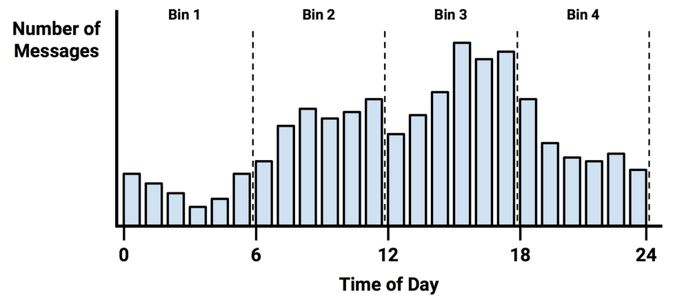
Strength and Weaknesses
| Strengths | Weaknesses | |-------------------------------+------------------------------------| | Simple, fast, effective | Feature independence and equity | | Good for noisy, missing data | Not good for numeric features | | Works few few or many samples | Unreliable estimated probabilities | | Easy to obtain probability | |
Summary
- NB constructs tables of probabilities to estimate the likelihood that new examples belong to various classes.
- Probabilities are calculated using Bayes' theorem, which specifies how dependent events are related.
- "Naive Bayes" makes assumptions about the independence of features to handle much larger data sets.
Glossary of terms
| TERM | MEANING | |---------------------------+------------------------------------------------| | Probability P | Number between 0 and 1 | | | Chance of an event occurring | | P = 0 | Event will definitely not occur | | P = 1 | Event will certainly occur | | Evidence | Labeled feature values | | Event | Something that happened or can happen | | Trial | Sample of at least one event | | Spam | Malicious message | | Ham | Non-malicious message | | Mutually exclusive events | Events cannot happen in the same trial | | Exhaustive events | Events cover all possible events | | Joint probability | Chance for events to happen together | | Independent events | Joint probability is zero | | Dependent events | Conditional probability is non-zero | | Bayes' Theorem (simple) | P(A \vert B) = P(A \cap B) / P(B) | | Bayes' Theorem (complete) | P(A \vert B) = P(B \vert A) * P(A) / P(B) | | | Posterior P = likelihood * prior P /marginal P |
Glossary (cont'd)
| TERM | MEANING | |---------------------------+------------------------------------------------| | Conditional probability | P(A \vert B) Probability of A given B occurred | | Frequency table | Counts features for each class level | | Likelihood table | Feature likelihood conditional on class levels | | Naivety of Naive Bayes | All features are equally important | | | All features are independent of one another | | Naive Bayes simplified | Class conditional independence | | | Constant marginal likelihood | | Laplace correction | Likelihood 1 for events that never occur for | | | one or more levels | | Numeric Bayes | Discretized or binned feature values | | Bayes' under/overfitting | Too few/too many bins obscure/created trends |
References
- Lantz (2019). Machine Learning with R (3e). Packt.
- Majka M (2019). naivebayes: High Performance Implementation of the Naive Bayes Algorithm in R. R package v0.9.7, URL: r-project.org.
- Photo by Dmitry Ratushny on Unsplash
- Photo by Naser Tamimi on Unsplash
- Photo by Markus Spiske on Unsplash